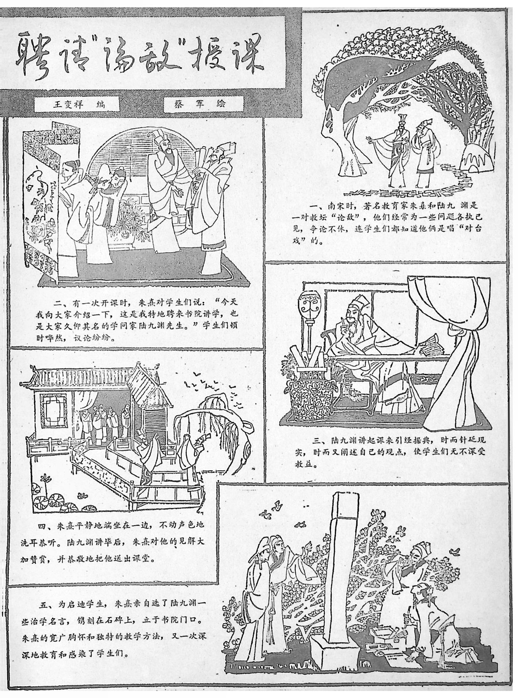

蔡军绘画；王变祥编文 《人事》1988年第3期（总第30期），封三
聘请“论敌”授课
Inviting a “Debating Rival” to Teach
- Panel text
- 一、南宋时，著名教育家朱熹和陆九渊是一对讲坛“论敌”，他们经常为一些问题各执己见，争论不休，连学生们都知道他俩是唱“对台戏”的。
1. In the Southern Song, the famous educators Zhu Xi and Lu Jiuyuan were “debating rivals” on the lecture platform. They often held opposing views and argued endlessly; even their students knew the two were staging rival performances. - 二、有一次开课时，朱熹对学生们说：“今天我向大家介绍一下，这是我特地聘来书院讲学，也是大家久仰其名的学问家陆九渊先生。”学生们顿时哗然，议论纷纷。
2. Once, at the start of a class, Zhu Xi said to his students: “Today let me introduce someone whom I have specially invited to lecture at the academy — the scholar whose name you have long revered, Mr Lu Jiuyuan.” The students were thrown into uproar and talked among themselves. - 三、陆九渊讲起课来引经据典，时而针砭现实，时而又阐述自己的观点，使学生们无不深受教益。
3. Lu Jiuyuan lectured citing the classics, now criticizing present ills, now expounding his own views, and every student profited deeply. - 四、朱熹平静地端坐在一边，不动声色地洗耳恭听。陆九渊讲毕后，朱熹对他的见解大加赞赏，并恭敬地把他送出课堂。
4. Zhu Xi sat calmly to one side, listening respectfully without a flicker of expression. When Lu Jiuyuan finished, Zhu Xi praised his views highly and respectfully saw him out of the lecture hall. - 五、为启迪学生，朱熹亲自选了陆九渊一些治学名言，镌刻在石碑上，立于书院门口。朱熹的宽广胸怀和独特的教学方法，又一次深深地教育和感染了学生们。
5. To enlighten his students, Zhu Xi himself chose some of Lu Jiuyuan's famous sayings on learning and had them carved on a stone tablet set up at the academy gate. Zhu Xi's broad-mindedness and unusual teaching method once again deeply taught and moved his students.
- 一、南宋时，著名教育家朱熹和陆九渊是一对讲坛“论敌”，他们经常为一些问题各执己见，争论不休，连学生们都知道他俩是唱“对台戏”的。
- Description
- Five-panel picture story: the Southern Song educator Zhu Xi invites his famous intellectual rival Lu Jiuyuan to lecture at his academy, listens respectfully, praises him, and has his sayings carved on a stone at the academy gate.
- Note
- Zhu Xi (1130–1200) and Lu Jiuyuan (1139–1193) were the leading opposed Neo-Confucian philosophers of their age; Lu lectured at Zhu's White Deer Grotto Academy in 1181. The lesson for 1988 readers: employ able people even if they disagree with you.
- Artists
- Cai Jun 蔡军 (drawn); Wang Bianxiang 王变祥 (text)
- Published in
- 《人事》1988年第3期（总第30期）, inside back cover
- Themes
- Talent and its neglect · Exemplary history · Picture stories (连环画)

Cite
Cai Jun and Wang Bianxiang, “聘请“论敌”授课” [Inviting a “Debating Rival” to Teach], Renshi (Personnel) 《人事》, 1988, no. 3, inside back cover.